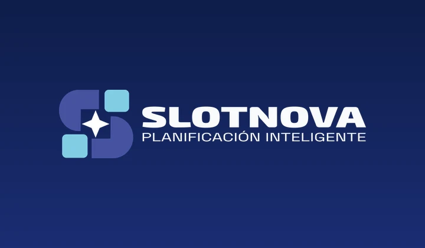
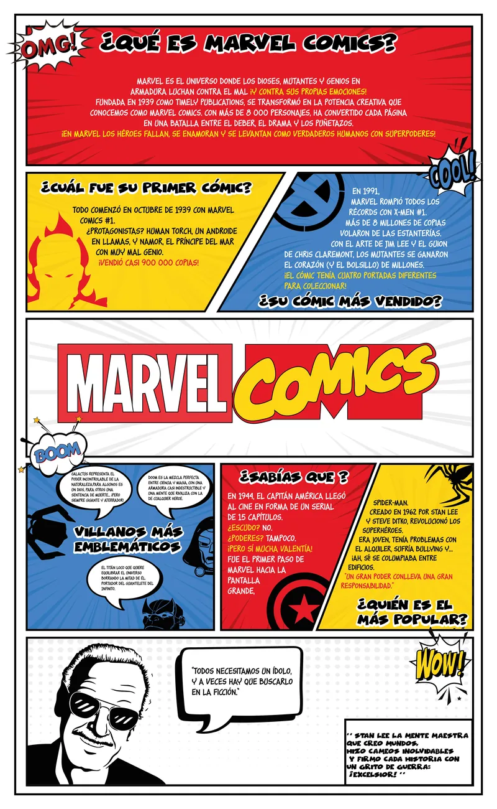
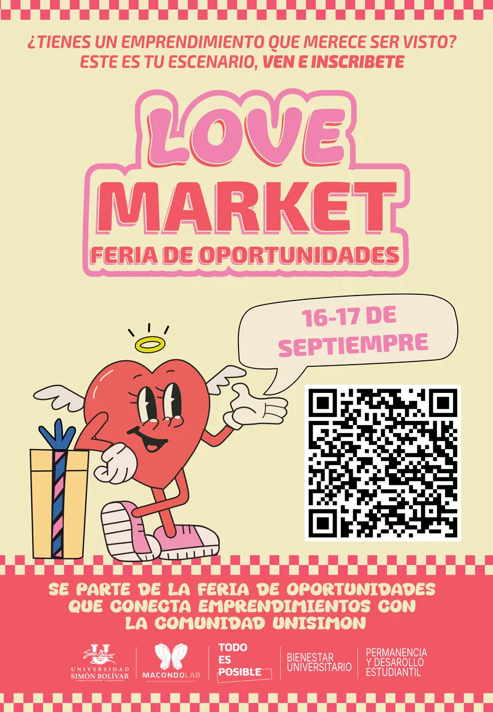

Ingeniero Multimedia
Creo experiencias digitales: ideas que se ven, se oyen, se mueven y se sienten.
Universidad Simón Bolívar · Cúcuta
- 12Proyectos publicados
- 2Juegos publicados
- 6ºSemestre en curso
- 8Habilidades clave
Sobre mí
Estudio Ingeniería Multimedia y me apasiona todo lo que une la creatividad con la tecnología: diseño, código, animación, videojuegos y todo lo que aún me falta por explorar.
Proyectos destacados
Una muestra de mi trabajo en diseño, web y publicidad
-
Proyecto destacado

Hackatón · Aplicación webSlotNova — Planificación inteligente
Tercer puesto · Colombia 5.0
Página web que genera horarios escolares de forma automática, evitando conflictos entre grados, cursos y docentes.
En equipo con Cielo Caicedo y Santiago Colmenares
Ver proyecto -

Identidad Visual¿Qué es Marvel Comics?
Pendón de tema libre con estilo visual tipo cómic, explicando la historia y curiosidades del universo Marvel, con una identidad visual clara y consistente.
Ver proyecto -

Pieza PublicitariaLove Market — Feria de Oportunidades
Pieza gráfica promocional para MacondoLab Cúcuta, creada para el evento que conecta emprendimientos con la comunidad de la Universidad Simón Bolívar.
En conjunto con Cielo Caicedo
Ver proyecto
Habilidades
-
Logos y manuales de marca completos, como el de Santisarm Animation, Flama y Love Market.
-
Piezas para clientes reales, como 1076 Perfumería, y para eventos como Love Market: conectar con lo que quiere el cliente.
-
Animación 2D, stop motion y motion graphics en After Effects: aprendiendo y avanzando hacia el estudio.
-
Manejo muy bien Illustrator para piezas gráficas; los personajes los sigo practicando.
-
Buen ojo para tomar fotos y desarrollar conceptos, como el postre flotante y el bodegón; me falta aprender más edición.
-
Prototipos y flujos en Figma, todavía con apoyo.
-
Modelado en 3ds Max con apoyo, como mi espada; en aprendizaje.
-
HTML, CSS y JavaScript: conozco lo básico y me apoyo en la IA para programar rápido, como en esta página.
Toca una habilidad para ver más · la barra muestra mi nivel
Cómo trabajo
1. Escuchar
Escucho la idea del cliente: qué busca exactamente, todo el trasfondo y el porqué de lo que pide.
2. Proponer
Le muestro ideas y opciones, con sugerencias cuando hacen falta, bocetos y moodboards.
3. Diseñar a la vista
Empiezo los diseños y voy mostrando el avance, para aplicar a tiempo los cambios que pida.
4. Entregar
Presento el resultado final de la mejor forma, con mockups si hacen falta, y me aseguro de que el cliente quede satisfecho.
Mi trayecto
- 2024-1 · Primer semestre
Ingreso a Ingeniería Multimedia
Empiezo en la Universidad Simón Bolívar, sede Cúcuta. Entre 2024-1 y 2025-1 empiezo a ver las materias propias de la carrera.
- 2025-1 · Tercer semestre
Diseño gráfico
Elaboro la etiqueta de Feu Doux Delux y el pendón de Marvel Comics.
- 2025-2 · Cuarto semestre
Diseño gráfico digital
Hago el manual de marca de Santisarm Animation y la revista Up Date.
- 2026-1 · Quinto semestre
Animación 2D y perfil innprendedor
En animación 2D hago un stop motion y dos motion graphics: uno de marca personal y otro de un empaque. En perfil innprendedor diseño mi perfil y hago el rebranding y la camiseta de Flama, Escuela de Liderazgo.
- 2026-2 · 29 de octubre
🏆 Tercer puesto en la hackatón Colombia 5.0
Con Cielo Caicedo y Santiago Colmenares creamos SlotNova, una página web que genera horarios escolares.
- 2026-2 · Sexto semestre
Hoy: sexto semestre
En modelado 3D hago una espada a partir de una referencia; en fotografía digital, un postre con efecto flotante y un bodegón de naturaleza muerta; y en ingeniería web, esta página personal y mis videojuegos. Aparte de la universidad, hago la pieza gráfica de Love Market y la campaña Trío Amoroso.
- Lo que sigue
La meta
Seguir creciendo como multimedia.
Arcade Santisarm
¿Te animas a una partida? Juegos hechos por mí con ayuda de Claude, la IA de Anthropic, listos para jugar en tu navegador o en tu celular.
Entrar al ArcadeHablemos
¿Buscas a alguien creativo para tu equipo o tienes un proyecto en mente? Cuéntame qué necesitas y te respondo.